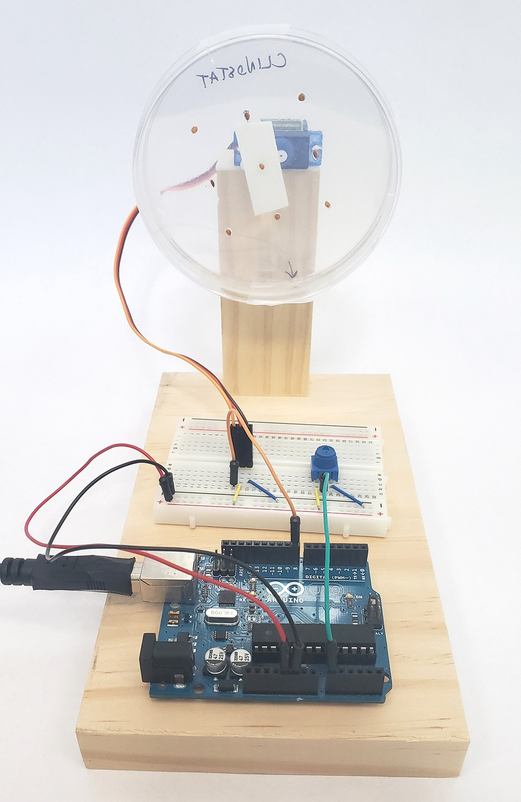
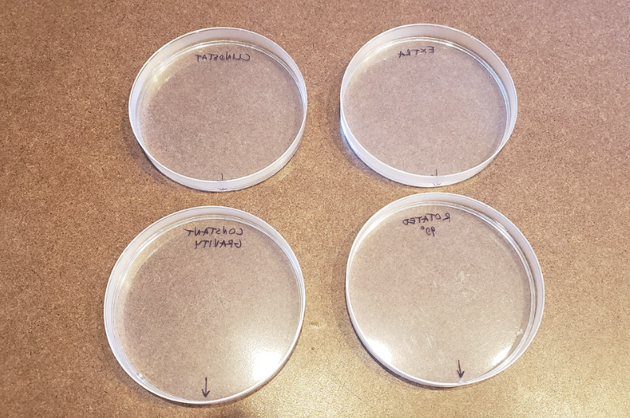
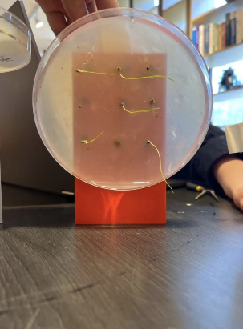
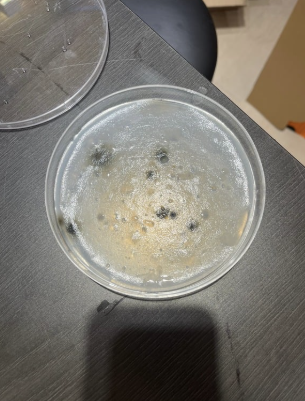

STEM Fair 2024
Grow Plants in Microgravity
We want to discuss how gravitropism effects the growth of plants(especially for the root part)
Is the root growing the same direction as gravity?
Imagine:
The root part will be effected by gravitropism
Plan
Grow the plants in different gravitation situations.
Create:
I used a website called Aruduino Clinostats to design our rotation machine, I placed the petri-dishes that has seeds in it on the machine


Experiment

After finishing our designs, we waited for 3-4 days to onbserve the growth of each experiment
Improvement
We would like to avoid the growth of mold in our petri-dishes
